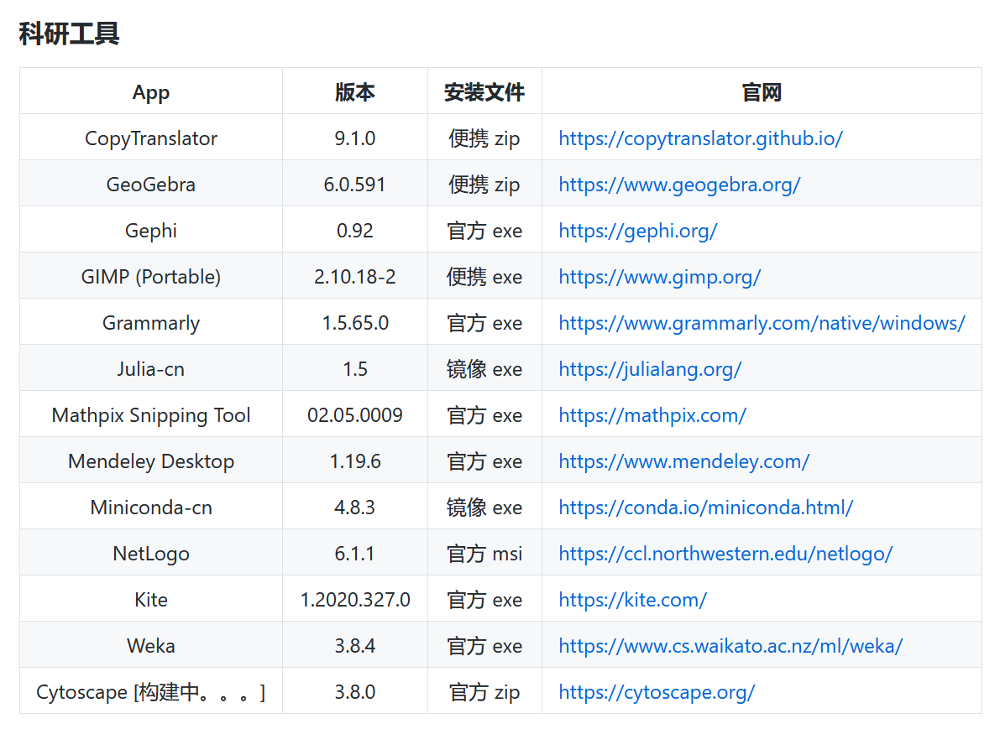
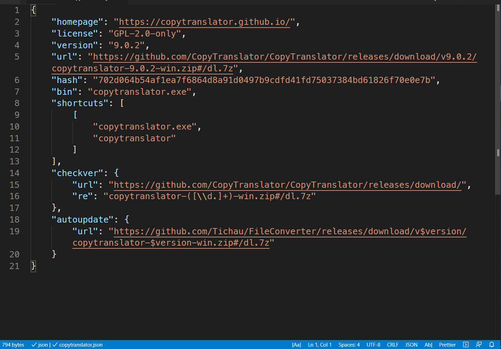
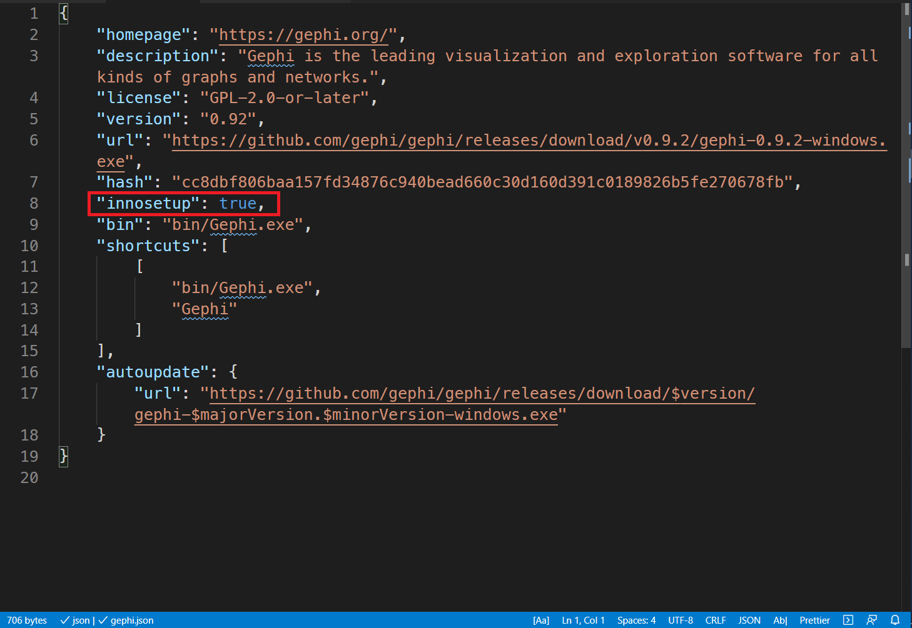

搭建 Windows 统一开发环境（Scoop）
Contents
搭建 Windows 统一开发环境（Scoop）¶
包管理器¶
包管理器（package manager）是开发人员常用的生产力工具，Ubuntu 上的 Apt-Get 和 macOS 上的 Homebrew 等的使用都让开发环境的搭建变得无比丝滑。这里的包，可理解成广义上的软件，不仅包含常见的基于图形用户界面（GUI）的软件，还包含基于命令行界面（CLI）的开发工具。简单说，包管理器就是一个软件自动化管理工具。
作为一款以 GUI 见长的大众操作系统，Windows 的包管理器长期被忽视。如今，随着 Windows 的迭代和编程技术的日益普及，Windows 也有了经过时间检验的包管理器：WinGet 和 Scoop。
总的来看，上述两者各有长短。
Scoop
优点：
自定义程度高，脚本基于 JSON，可读性较强
不需要管理员权限
缺点：
默认涵盖的 GUI 软件少
依赖社区及个人维护
试用人群：喜欢折腾的程序员
展望：因为不需要管理员权限，故在未来相当长的时间，仍会占有一席之地。
WinGet
优点：
涵盖大量 GUI 软件
微软官方维护
缺点：
命令行工具少
需要管理员权限
试用人群：一般程序员，及没有编程基础的人
Scoop 的安装¶
Scoop 由澳洲程序员 Luke Sampson 于 2015 年创建，其特色之一就是其安装管理不依赖”管理员权限”，这对使用有权限限制的公共计算机的使用者是一大利好。其的安装步骤如下：
步骤 1：在 PowerShell 中打开远程权限¶
Set-ExecutionPolicy RemoteSigned -Scope CurrentUser;
步骤 2：自定义 Scoop 安装目录¶
$env:SCOOP='Your_Scoop_Path';
# $env:SCOOP = 'C:\Scoop';
[Environment]::SetEnvironmentVariable('SCOOP', $env:SCOOP, 'User')
若跳过该步骤，Scoop 将默认把所有用户安装的 App 和 Scoop 本身置于c:/users/user_name/scoop
步骤 3：下载并安装 Scoop¶
iwr -useb get.scoop.sh | iex
scoop update
国内镜像
iwr -useb gitee.com/glsnames/scoop-installer/raw/master/bin/install.ps1 | iex
scoop config SCOOP_REPO 'https://gitee.com/glsnames/scoop-installer'
scoop update
步骤 4：安装包（主要是命令行程序）¶
scoop install <app_name>
scoop install sudo
Scoop 的使用（加载扩展库）¶
步骤 2：安装 Git 来添加新仓库¶
scoop install git
步骤 3：添加仓库并更新¶
添加官方维护的 extras 库（含大量 GUI 程序）
scoop bucket add extras
# 国内镜像
# scoop bucket add extras https://gitee.com/scoop-bucket/extras.git
scoop update
git 下载若使用 Scoop 原生的下载协议可能比较慢，建议使用如下迂回方案：
用第三方下载器，如 Motrix 下载；
然后将文件复制到
pathtoscoop/cache；输入 scoop install git，此时会产生一个扩展名为.download 的文件；
输入 scoop uninstall git；
重命名自己下载的文件名为 3 中的文件名，但取代 .download 文件；
输入 scoop install git；
可选步骤：添加我创建并维护的 scoopet 库（专注服务科研）¶
scoop bucket add scoopet https://github.com/ivaquro/scoopet
scoop update
scoopet 库包含的安装脚本分为如下四类：
科研工具：如 miniconda（国内镜像），julia（国内镜像），copytranslator，gephi，geogebra，mendeley
开发辅助：如 cyberduck，virtualbox，vmware
日常办公：如 WPS（国内版），百度网盘，灵格斯词霸
社交休闲：如 you-get，网易云音乐，微信
详情见 README_CN

步骤 4：安装 App¶
使用
scoop search命令搜索 App 的具体名称
scoop search <app_name>
利用插件
scoop-completion协助安装
scoop install scoop-completion
scoop install <app_name>
使用
scoop-completion：键入 App 名称的前几个字母后敲击tab键进行补全
步骤 5：查看官方推荐仓库¶
scoop bucket known
main [默认]
extras [墙裂推荐]
versions
nightlies
nirsoft
php
nerd-fonts
nonportable
java
games
jetbrains
这里，推荐 Apps | Scoop，方便全网查询安装脚本所在 bucket。
Scoop 的管理与配置¶
更新¶
# 查看已安装程序
scoop list
# 查看更新
scoop status
# 删除旧版本
scoop cleanup
# 自身诊断
scoop checkup
命令行推荐¶
# 使用 Linux 命令行
scoop install gow
# 调用管理员权限
scoop install sudo
# windows 终端
scoop install windows-terminal
Aria2 的参数¶
打开~\.config\scoop\config.json，加入以下内容
{
"alias": {},
// aria2 在 Scoop 中默认开启
"aria2-enabled": false,
// 关于以下参数的作用，详见aria2的相关资料
"aria2-retry-wait": 4,
"aria2-split": 16,
"aria2-max-connection-per-server": 16,
"aria2-min-split-size": "4M",
"proxy": "none"
}
杀毒¶
# 开启
sudo Add-MpPreference -ExclusionPath "$($env:programdata)\scoop", "$($env:scoop)"
# 关闭
sudo Remove-MpPreference -ExclusionPath "$($env:programdata)\scoop", "$($env:scoop)"
代理¶
scoop config proxy proxy.example.org:8080
# 认证
scoop config proxy [username:password@]host:port
建立自己的 Bucket¶
由于没有自己的公司，Scoop 当前是完全社区化的，核心代码除了增加了 aria 集成，其他没有太多明显的变化，只有不断扩大的扩展库，也称 bucket。当然由于软件繁多，社区里目前主要维护的 bucket 还是 main 和 extras，姑且算是官方库。故，难免有自己需要，而官方库里有没有的软件。不过，Scoop 的简洁，使用户自定义 bucket 的技术门槛非常低，这亦为我一直以来推崇 Scoop 远胜于 Chocolatey 的主要原因之一。
Scoop bucket 的创建的关键步骤有如下两个：
创建 git 仓库
编写脚本
大家均是成年人了，github 这个同性交友网站的使用在这里就不做赘述了。
脚本结构¶
Scoop 脚本的大致结构如下：

需要做的就是将其中的各项替换。现对各个项目做一下介绍，加 * 的是必填项：
*homepage：主页链接；license：软件发布遵循的协议；*version：软件的版本；*url：软件下载链接；hash：软件的校验码；bin：安装完毕后的可执行文件（.exe 等）的相对路径；shortcuts：开始菜单里的快捷方式，上下分别为文件名、文件夹名；checkver：版本校对；autoupdate：自动升级，涉及持续集成；
hash¶
脚本开始构建的时候，需要到官网，把软件下载下来，然后本机查看 hash，默认为 sha256 码，也有 md5 和 sha1 形式的，命令如下：
certutil -hashfile [file] sha256
certutil -hashfile [file] md5
certutil -hashfile [file] sha1
url¶
url是比较难处理的。简单说，开源软件最方便，很多可开箱即用，而非开源的不少就特别繁琐，有的甚至处理不了，如 QQ（处理不了 QQ Protect）。这个叙述起来都特别麻烦，需要具体情况具体分析，这里只简述一般情况，后面慢慢补充。
.msi类：往往不需要变更；.zip类：往往不需要变更，部分需要在下载链接末尾添加#/dl.7z；.exe类：大部分都需要在下载链接末尾添加
#/dl.7z（Scoop 默认使用 7zip 进行解压安装）；不能直接解压的，若内置有
innosetup，需要在脚本里添加，"innosetup": true；

祝愿感兴趣的朋友早日拥有自己的 bucket，方便自己，也方便他人。